星座別セルフケア
身体に負担がかかりやすい場所と対策法をご紹介します。
牡牛座(4/20-5/20)
負担がかかりやすい場所 頭部 顔 目
常にエネルギッシュで活動的な牡羊座は、頭をフルに回転させていることが多いので、頭痛や目の疲れを感じやすいでしょう。
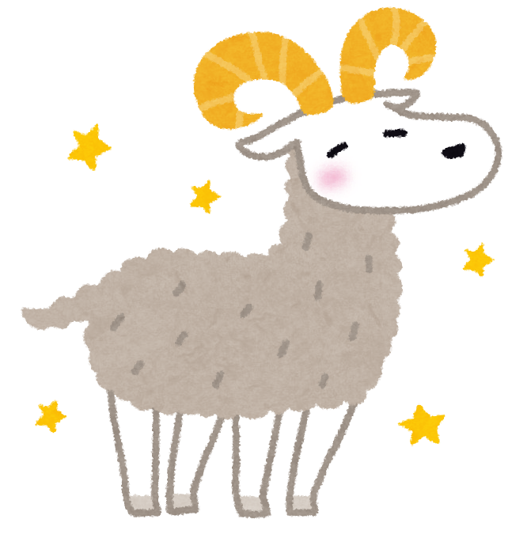
- アイマスクで目を休ませる
- 頭部をマッサージする
- ファッションに赤を取り入れる。
牡羊座4/4-5/20
負担がかかりやすい場所 首 喉 甲状腺
五感が優れているの牡牛座は、ストレスを溜めやすい傾向が強い。特に、喉や首回りに緊張が現れやすい。
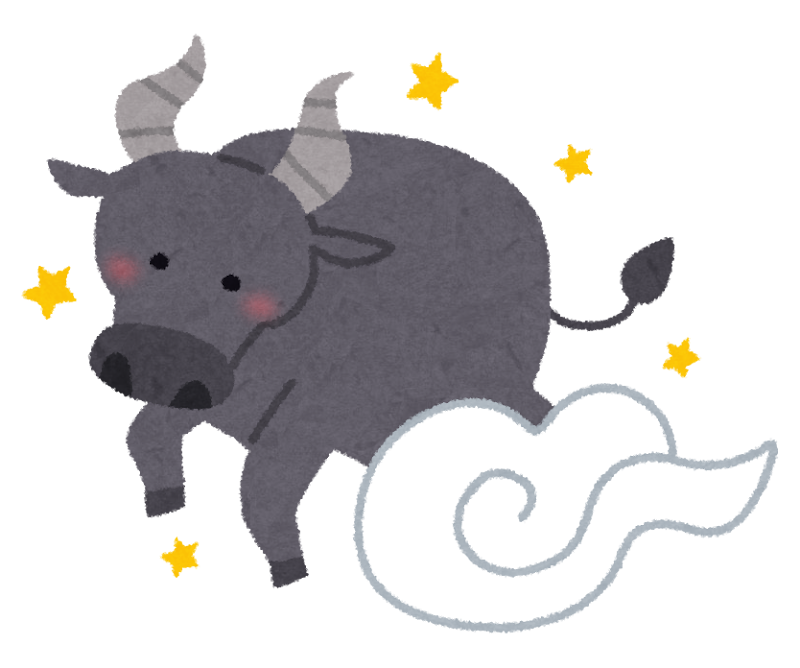
- 首肩のストレッチ
- 暖かい飲み物を飲んだり
- 加湿器を利用して喉を乾燥から守る。
双子座5/21-6/21
負担がかかりやすい場所 肩こり呼吸器系
情報収集が大好きで常に頭を働かせている双子座は、神経が過敏になりやすく、呼吸が浅くなりがち。
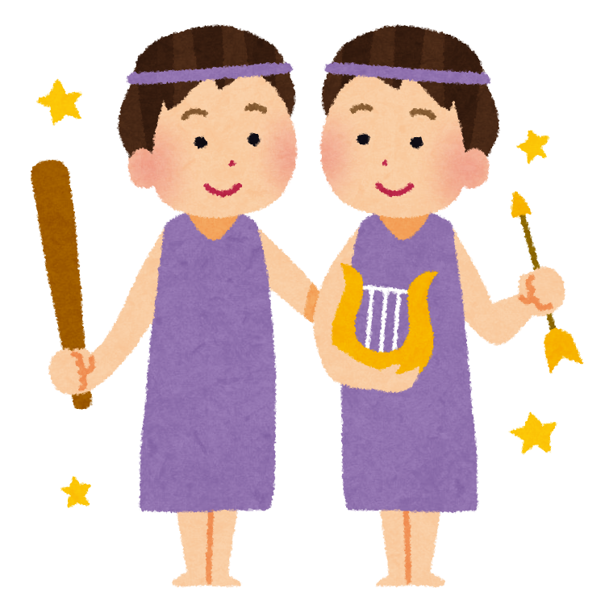
蟹座座6/22-7/22
負担がかかりやすい場所 頭部 顔 目
感受性が強く、人の気持ちに敏感な蟹座は、ストレスを胃腸で感じやすいでしょう。また、感情の起伏が激しいときも疲れを感じやすい。
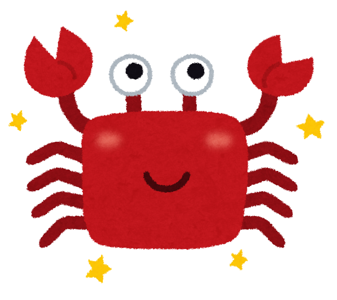
- 暖かい食事をとり,胃腸を労わる
- 一人でゆっくりする時間を確保する
- 人に話を聞いてもらったり、日記を書いて感情を開放させる。
獅子座7/22-8/22
負担がかかりやすいところ 心臓 背中
心臓に負担がかかりやす傾向があり。常に姿勢を正そうとするため。背中が凝りやすい。
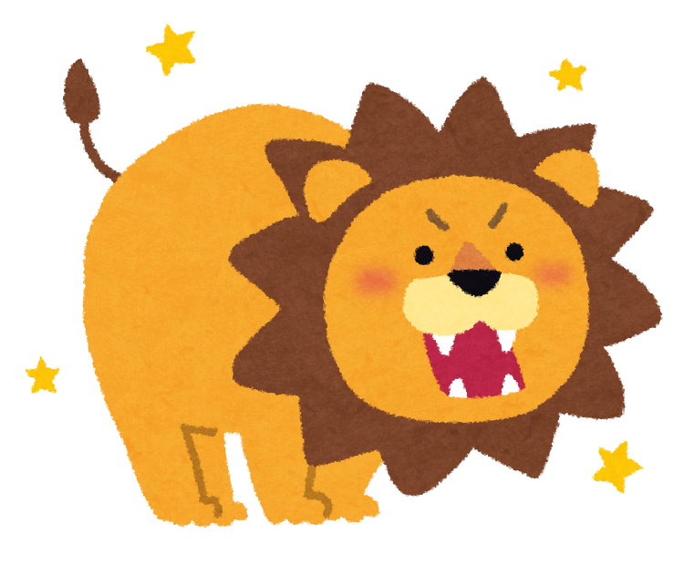
- 塩分を控えめなバランスの良い食事を心がける。
- 肩甲骨をほぐすストレッチや背伸びをするストレッチを行う。
- 好きな音楽を聴いて気分を盛り上げる。
乙女座8/23-9/22
負担がかかりやすいところ 腹 消火器系
几帳面で完璧主義な乙女座は、ストレスを腹で感じやすい傾向が。また、神経質になりやすく。消化不良を起こしやすいでしょう。
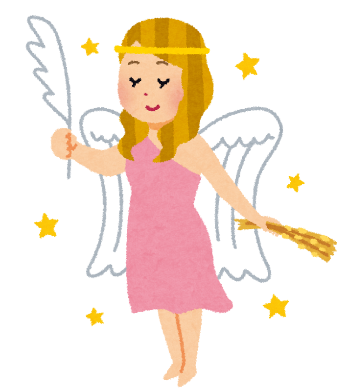
- 食物繊維や発酵食品を積極的に摂取し、腸内環境を整える。
- 規則正しリズムで生活する。
- フォームローラー等を使用し、肩甲骨の下部をほぐす。
天秤座9/23-10/23
負担がかかりやすい場所 腰 腎臓
バランス感覚に優れている天秤座は、無理をしてバランスを崩すと、腰や腎臓に負担がかかりやすいでしょう。
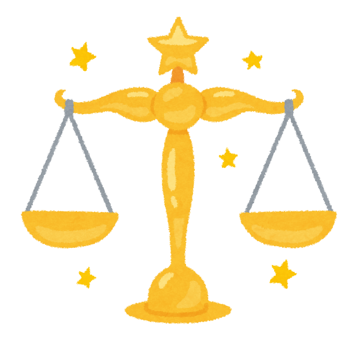
- 湿布やカイロで腰を温める
- こまめな水分補給
- 腰回りのマッサージ。
蠍座10/24-11/24
負担がかかりやすい場所 生殖器系 内分泌系
集中力が高い蠍座は。ストレスを溜め込みやすく、ホルモンバランスを崩しやすい傾向があります。
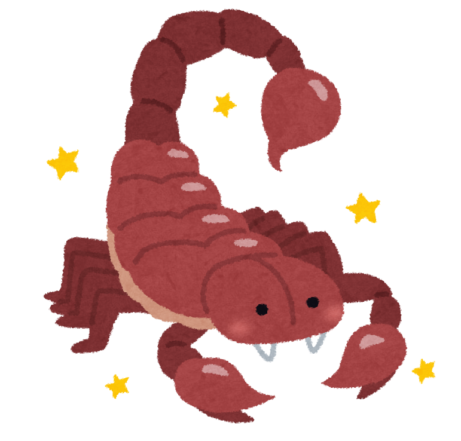
射手座 11/23-12/21
負担がかかりやすい場所 股関節 太もも
自由を愛する射手座は常に動き回っているため。股関節や太ももに負担がかかりやすい
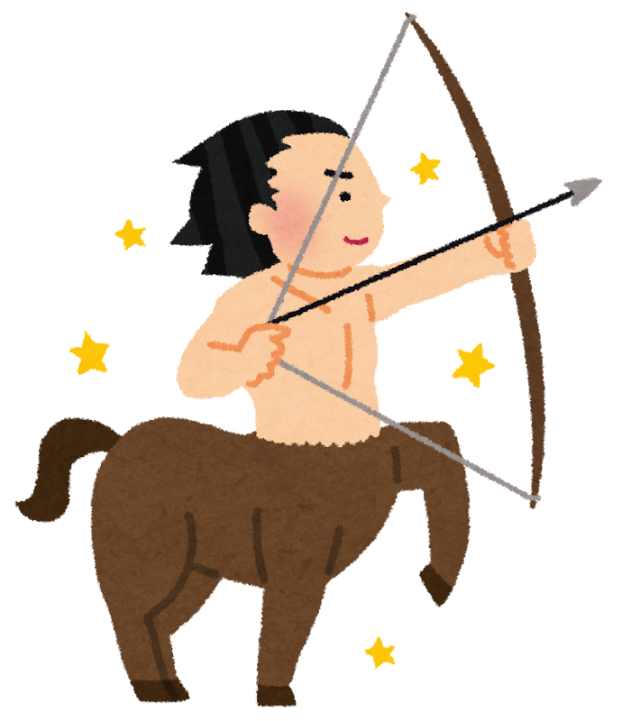
- 股関節周辺のストレッチ/li>
- ウォーキング
- 新しいことに挑戦
山羊座12/22-1/19
負担がかかるところ 膝 関節
責任感が強く。真面目な山羊座は無理をしやすく、膝や関節に負担がかかりやすいでしょう。
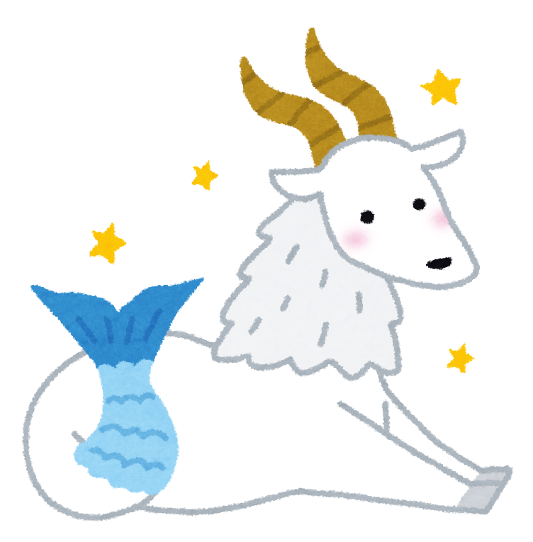
- 温湿布やサポーターで膝を温める
- 意識的に休息を取り入れる
- 自然に触れる
水瓶座1/20-2/18
負担がかかりやすいところ ふくらはぎ 足首
個性的で自由な水瓶座は。考え事が多く。頭に血が上りやすい傾向が。そのため、足元が冷えやすく、ふくらはぎが疲れを感じやすいでしょう。
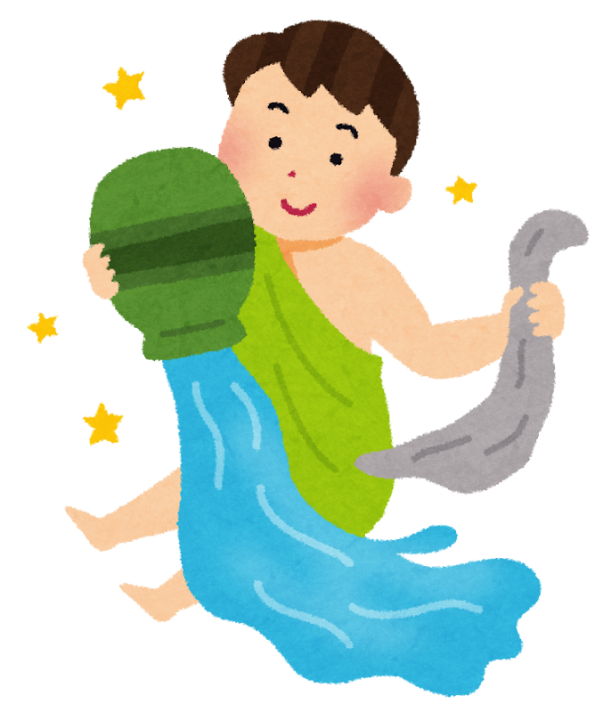
- 足湯に入る
- ふくらはぎをマッサージする。
- 興味のあるコミュ二ティーに参加する。
魚座 2/19-3/20
負担がかかりやすいところ 足（足裏 足首） リンパ系
共感力が高く、人の感情に影響を受けやすい、精神的な疲れが体に現れやすいといわれています。
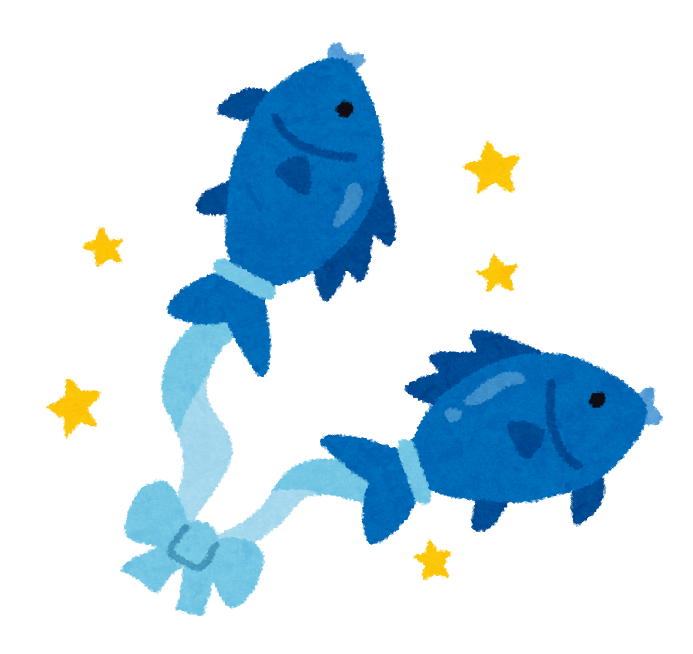
- 足湯 フットマッサージ
- お気に入りの香りで入浴する
- デジタルデトックス